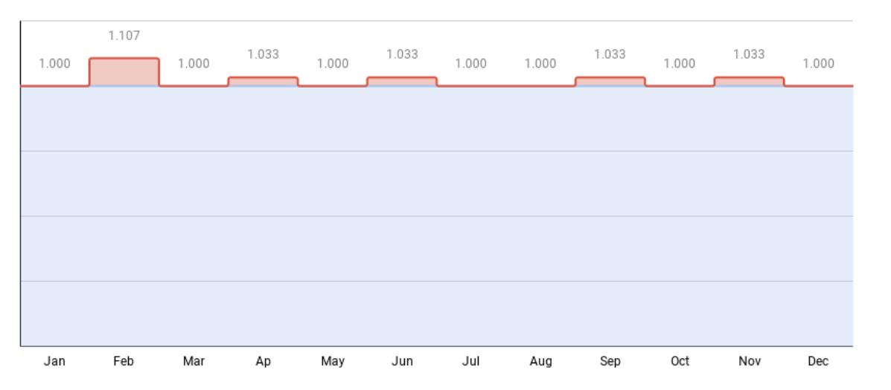
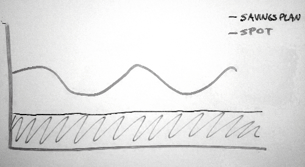

A Dismal Guide to AWS Billing
Table of Contents
Part one: If you want it done right...
The CUR
Cloudstats
When we talk about cost
Value in dollars
Thirty days hath September
Part two: Using Cloudstats
Synthetic dimensions
Speaking of dashboards
Example: S3 growth
Example: Compute efficiency
Tag, you're It
Own your ontology
Monkeytagging
Anomaly detection
Part three: Capacity Planning
Wait, is this even right?
Projections
Scenarios
Strategic buying & tradeoffs
Part four: Boss Level
Timing
Leverage
Terms
Don't get greedy
Conclusion
This is longer than an article but shorter than a book, so here's a little tldr / main thesis up top:
Cost control is like security. Everyone should be aware of it, but it's best handled by a small expert team. Outsourcing it is asking for trouble.
Everything depends on having good data. Amazon's billing log is extremely messy. Cloudstats is an open-source ETL you can use to clean it up.
There are lots of useful charts & queries you can build on top of Cloudstats. As your infra evolves, your measurement must track those evolutions.
The essence of capacity planning is the ability to compare two possible changes, dollar-for-dollar, before you actually make them.
Contract negotiation is the final boss level. To beat the boss you need the tools & weapons you earned in previous levels.
Part one: If you want it done right...
If you spend more than a million dollars per year on cloud compute, you probably suspect that half of it can be cut. The problem, of course, is which half?
There are a lot of ways to find & land cost savings, but they come down to a) consuming fewer resources and b) getting a better price for what you do consume. Sure. And we should all eat less and exercise more. The question is how. The CFO is yelling and the engineers are shrugging. No one knows what’s going on. The monthly bill is scary, but even more scary is the growth rate.
The first step to controlling your budget is knowing in detail where the spending goes. If you don't have good data you can't do good analysis. If you don't know what you have spent, you can't predict what you will spend. Without good projections you can't do effective capacity planning. Without cap planning you can't run what-if scenarios. Without scenarios you can't negotiate good contracts. And once you've signed a bad contract, all of the above gets that much harder.
In short, if you don't have good data you've already lost.
AWS themselves offer you some tools to explore costs and suggest ways to buy smarter. Many (many) third-party tools offer to slurp up your cost and usage data and do it all for you. Often for a healthy percentage fee. But past a certain scale and complexity, capacity planning and cost control are too important to outsource.
It’s not because those tools don’t work. I assume that they are all earnest and honest. But they can’t leverage your internal knowledge. You are planning to turn off the Foobar service next month so there’s no need to commit to future spend for it. Foobar2 is running alongside Foobar during its ramp up, and you don't want to be bothered by alerts about "cost increases" you already know about. You want to measure your overall efficiency in terms of transaction volume or revenue dollars. You want to distinguish research & development from COGS and other inside info you can't just hand over to outsiders.
After a certain point you have to do capacity & cost analysis work yourself, in-house. And that point is probably around the time where a 20% savings would pay for the team doing it. (Earlier is better! You can save yourself a lot of heartache by laying the groundwork while you are still small.)
Just like security, cost control is something everyone should contribute to, but final responsibility must rest with a small expert team. Both require going deep and dirty with the data. Red Teams hunt for bugs that leak security access. Then they fix them and eliminate the root cause. Green Teams do the same thing except that they hunt for bugs that leak money.
Let's start with the data.
The CUR
The AWS Cost & Usage Report is the source of truth for usage and billing across Amazon’s cloud. It's an exhaustively detailed blow-by-blow account of how you use every computer, hard drive attached to that computer, database, network link, etc, for every hour of every day. A medium-sized customer can easily generate tens of millions of new records per month.
AWS Cost Explorer, the pretty charts & spending tips, and the monthly invoice are all generated from that source. You can ask for the raw data to be delivered to you as flat files, loadable into the database of your choice.
But the CUR is notorious for its dirty data and surprising behavior. The data is dirty because it includes the config info for a hundred different services stapled together. Over 300 columns, half of which are null or irrelevant, and the other half stuffed with accreted garbage. This whole thread is a hoot.
The CUR's behavior is surprising because those configs are in turn stapled to a dump of line-item billing records. The CUR is not a log. It's not an immutable sequence of events. It's a snapshot of the current state of AWS's accounting system. Records can be added or amended weeks after the fact. It contains all sorts of accounting artifacts like lump-sum fees, taxes, credits, third-party charges, details that are only known once the monthly invoice is finalized, corrections to previous lines, and pairs of line-items that cancel each other out altogether.
AWS's main problem maintaining their not-a-log over almost 20 years is backwards compatibility. Important Customers downstream depend on the exact behavior of every historical design bug and typo. If you were to fix those bugs at the source, downstream would break and then everybody gets mad at you. It's no wonder why the last major refactor was in 2015, or why the documentation is written in a defensive style. I neither blame those unsung heroes nor envy their job.
Complex as it is, I’ve never seen a systematic error in how AWS bills for usage. Their people do a damn fine job making sure the numbers add up and I don't want you to think otherwise. But in its raw form the CUR is not useful for day-by-day cost analysis. The useful info is scattered among too many weirdly-named, under-documented fields, and the not-quite-a-log thing is just confusing.
Cloudstats
Like Mike I could go on about those quirks for hours, but instead we’re going to kill them dead. Cloudstats is an open-source ETL that processes the Cost & Usage Report data and creates a much cleaner basis to work from. It's implemented in pure SQL so that with (I hope) minimal work you can get it running on your favorite data pipeline. There's nothing especially special about it. It's a simplifying layer, the kind of thing you might write yourself after some experience with the CUR. But there's no reason why everyone has to write their own.
The very first thing Cloudstats does is separate the cost from the usage.
The cloudstats table is a per-day aggregation and cleanup of only billable, usage line-items. Extra dimension tables are added to fill in nulls. Cloudstats also comes with a discounted accrual-basis measurement of “cost”. We’ll get into what that means in a bit.
cloudstats_bill is a per-month cash-basis aggregation of all line-items (including those lump sums, corrections, etc) reverse-engineered from the observed behavior of official AWS invoices. It provides much more detail than the PDF that's emailed to your accountants, eg explanations of individual taxes and credits. This table is covered in parts three & four.
A row in the cloudstats table is a rollup per day of billable usage in AWS. Say, a day in the life of a cluster of EC2 instances, or the data stored in Glacier for a given S3 bucket. Each row is aggregated along 50-odd useful dimensions (down from 300+) and a handful of measurements. The dimensions are low-cardinal, spellchecked versions of the CUR originals, with some synthetic fields constructed from multiple sources.
Check out the docs for extensive and irreverent comments on all of them. But I want to highlight one important field called "cost".
When we talk about cost
AWS offers a ton of ways to buy their stuff. The pricing structures are driven by the financial & accounting needs of both Amazon and their customers. Those needs are largely invisible and often baffling to engineers. If you've read this far it's a good bet you are already trying to figure them out from your own data. I'll go over them briefly (hah!) and then explain how the Cloudstats cost field smooths them out into something more useful for our purpose.
There are interesting reasons why the Spot market exists, but aren't relevant here. Let’s take the example of a single EC2 machine, a d3.2xlarge running basic Linux. As of this writing the public OnDemand price for that machine is $1.00 per hour. You can spin one up, use it for an hour, then spin it down. Or you can rent the same machine on the Spot market at a price that varies with supply & demand. Pretty simple.
Of course, this promise implies a new current liability to be carried on your balance sheet and an equivalent receivable on their sheet. Aren't you glad you went into programming instead? Things get complicated with Reserved Instances and Savings Plans. Essentially, Amazon is willing to pay you for the promise of steady revenue in the future. Otherwise that machine may sit idle, sucking juice and costing them money. If you promise to use that d3.2xlarge for a whole year they will only charge $0.63 per hour. If you promise 3 years, the price drops to $0.43. Very reasonable.
Net present value is more complicated than this because of future uncertainty and cashflow. But it's the basic bargain. But a dollar now is usually worth more than a dollar later. If you pay me a dollar today I can put it in the bank and maybe in a year I'll have $1.05. So Amazon also lets you pre-pay some or all of that year of usage upfront, for even deeper discounts.
1 year, no upfront: $0.63
1 year, partial upfront: $0.60
1 year, all upfront: $0.59
...etc etc
All of this is perfectly comprehensible to your financial planning & analysis team. The upshot is that because of financial decisions you maybe weren't involved in, your AWS billing log, which is not a log, gets annoyingly complicated.
Instead of a steady drumbeat of records saying Usage: one hour of d3.2xlarge, $1.00, you may get a single record with a huge amount, RIFee: 1 year d3.2xlarge, $5,148.23, and then a DiscountedUsage row every hour for the next year with zero cost. You've already paid, after all. This makes accounting sense but doesn't help you analyze "what you spend" every day.
More complications: some reserved instance plans allow you to convert your commitment between classes of machine. A Savings Plan is more flexible: you only commit to pay for a certain dollar amount of compute in general. Once you hit a half million or so per year, the Enterprise Discount Program (EDP) can get you blanket contractual discounts across all AWS services… if you commit to a total spend over 1 to 5 years. Going further, you can negotiate "private rates" for certain services you promise to use a lot of, like storage or network, or only in certain AWS regions, paying all upfront, or partially, and every combination of the above.
Imagine what your billing log (not a log!) looks like then. There can be a dozen different fields with "cost" or "fee" in the name, with overlapping meanings.
Value in dollars
AWS themselves attempted to do this with "equivalent compute units" and "normalized size factors". They were never that useful because gigabytes aren't gigahertz. But the fields linger on in the CUR table, confusing the unwary. And don't even ask about "blended cost". At this point you might want to throw up your hands and ignore the dollar stuff. Why can't we just focus on real things we can understand? Equivalent compute hours, or something. But say you want to save money by caching results in a database. How do you equate computers to terabytes? Or terabytes to database writes?
Go down that rabbit hole as far as you like. When you come back up for air it'll be clear that you need a single, fungible metric to compare the value of any kind of usage in the cloud. Without that you can't quantify tradeoffs. And it can't be the public listed price. Your metric has to be at least partially connected to your contract terms and the real dollars your CFO is yelling about.
The essence of capacity planning is the ability to compare two possible changes, dollar-for-dollar, before you actually make them. Even if it means using a very specific definition of "dollar".
The way to thread this needle is to assimilate some of those accounting bugaboos and ignore the others. You gotta deal with lump-sum fees. Contractual discounts seem important. But your local sales tax rate doesn't (or shouldn't) affect engineering decisions. Ditto for support charges and one-time credits. And that's what the Cloudstats cost metric does:
(case line_item_line_item_type
when 'Usage'
then line_item_net_unblended_cost
when 'DiscountedUsage'
then reservation_net_effective_cost
when 'SavingsPlanCoveredUsage'
then savings_plan_net_savings_plan_effective_cost
else 0
end)
Let's take that one piece at a time. The *line_item_type field has stuff like Usage, Tax, Credit, Refund, and so on. We are only interested in actual billable usage of resources, so everything else gets a zero. (Those lines are analyzed in cloudstats_bill.)
When the line_item_type is Usage that means it's OnDemand or Spot. We take the *net_unblended_cost (don't ask why it's called that) which includes all of the blanket contractual discounts you may enjoy, like EDP.
When line_item_type = DiscountedUsage that's for Reserved Instances and not EDP (again, don't ask). To sort out the prepayment stuff you used to have to do a bunch of calculations yourself. AWS now provides *reservation_net_effective_cost as a single field. This field does amortization, ie it divides lump payments evenly throughout the year. The "_net" part means it also applies blanket contractual discounts. The same thing happens for Savings Plans and I swear that it all adds up. Just don't ask why or this section would be twice as long.
This is (I believe) equivalent to the "Net amortized costs" measurement in AWS Cost Explorer. The end result is a "cost metric": a daily measurement of the cloud resources you consume in something resembling real dollars. It's not quite the same as what you see in the monthly bill. But it has the advantage that you can easily compare ideas and their tradeoffs. If rewriting the Foobar service would save you $50,000 but would take a month of work, you can instead choose to delete $50,000 of old data and move on to other things. And be reasonably sure you made the right call.
Thirty days hath September
Speaking of storage, there's one more wrinkle that trips up many people. AWS does something uniquely silly with how it measures data storage. This is how Cloudstats compensates for it:
(case
when pricing_unit = 'GB-Month'
then (cost / (365.25 / 12)) * days_in_month
else cost
end)
It takes the cost of storage on a given day, divides by the average number of days in a month, then multiplies by the actual length of that month. Weird, right?
The nominal rate (eg $0.05 per GB-Month) stays the same, but you 'use' more than one day per day during a short month.
It's necessary because of the way Amazon charges for storage, by the "GB-Month". A GB stored for a day is charged as a fraction of that month. However, AWS defines a "Month" as 31 days. But how do you charge for 31 days' worth of storage during a 28-day month? By inflating the usage amount.
In February your effective daily storage rate goes up by over 10% compared to January. There are smaller jumps in 30-day months. I suspect this is why it seems like every storage pricing example just happens to randomly choose March.
Cloudstats rescales the cost metric for storage (and storage_total_tb) to smooth it out. That way you're only measuring real changes in the amount of data you manage. Otherwise you and your anomaly detectors would go crazy chasing phantoms.
These are just some of the gory details of AWS billing and how they can be corrected. Now, let's use this data to find us some real cost bugs.
Part two: Using Cloudstats
The design of Cloudstats is meant to allow you to generate useful time-based charts and analyses. The main fields are roughly hierarchical. This allows you to start big and then dial in the specificity. In my experience, you want to start at the headline number and recursively subdivide until you've found your target.
date, date_week, date_month, etc fields control the timespan and granularity. It's often useful to only look at your peak day_of_week, for example.
pricing_bucket: the basic datacenter resource being consumed: Compute, Storage, Network, IO, and so on.
pricing_unit: a (very) cleaned-up version of the original pricing unit, which is more specific than pricing_bucket. For example, the IO bucket will have ReadRequestUnits and WriteRequestUnits.
product_code: whatever AWS product generated the billing.
usage_type
operation: even more granular than pricing_unit. Eg, Network --> GB-Network --> InterZone-In and -Out. Lots of data barnacles are scraped off for convenience.
resource_name: mostly derived from line_item_resource_id, which usually has the full ARN of the AWS entity being used. It's meant to reveal, eg, database names or S3 bucket names. Individual EC2 instances and volumes are folded into cluster names when available. UUIDs and other high-cardinality strings are stripped.
Synthetic dimensions
AWS's tooling tends to show you cost and usage per product_code. This is probably a symptom of Conway's Law, where a company's org chart leaks into the structure of its output. But a big part of cost analysis is finding new dimensions to compare & contrast. For example, data stored in expensive EFS or EBS volumes might be just as happy in S3. Forgotten backups are often a rich vein to explore. This is where pricing_bucket comes in handy:
select
date,
product_code,
sum(cost) as cost
from cloudstats
where
date >= current_date - interval '35' day
and pricing_bucket = 'Compute'
group by 1,2;
This basic query lets you look at all Compute cost (and only Compute) across your databases and clusters & whatnot. Or makes it easier to see what fraction of your storage cost goes to old backups. The cost of all Network traffic is often a surprise to people looking at it this way for the first time.
You'll probably want to start with a separate dashboard for each pricing_bucket, starting with the headline number and with each chart getting more specific down the hierarchy.
Speaking of dashboards
Artist's conception. Not to scale. I wish I could show you more screenshots. Despite this wall of text, I mostly think via graphs. But there's client confidentiality to think about and generating plausible dummy data is a lot of work. But I can say that I'm a fan of pivot tables because they let you drill down the hierarchies efficiently. Timeseries plots, both stacked and lined, are good for checking on how you're doing. The more dashboard-level filters the better, at least until you learn which ones are useful for your needs. The Filter Other Charts action you can apply to pivot cells in AWS QuickSight is sweet.
Most of the time those are the only chart types I use. Since I often have to work with what the customer already uses, I tend to keep my needs small. But if you have a choice, make sure your dashboarding system can generate stable URLs so you don't have to screenshot everything. Even better, URL args so people can iterate off of your work. When Jupyter Lab removed URL args (for sound security reasons) it made me sad.
Data analysis is inherently a social activity. But it also needs to meet a high bar for reproducibility. Otherwise you're just operating on gossip.
One unfortunately rare feature is the ability to export a dashboard into something editable offline. A dashboard is made of code, important code, that informs expensive decisions. It's baffling to me how many systems don't allow you to put that code under source control. QuickSight only added this feature in late 2022. And even then it's delivered as a distressingly verbose blob of JSON.
Example: S3 growth
In the interest of time (double hah!) I'll only go through a couple examples of finding likely cost wins. There are more in the code repo.
S3 buckets can grow to outrageous sizes when no one is looking. And storage costs compound; every day you pay for the sum of everything stored. A big bucket is not necessarily a problem if its growth rate is small. A small bucket with large absolute growth is something you'll want to catch sooner rather than later. Remember, the quicker you can find a cost bug the more money you save overall. So let's find out what your growth rates are.
with daily_totals as (
select
date,
resource_name as s3_bucket,
sum(storage_total_tb) as tb,
sum(cost) as cost
from cloudstats
where
date >= current_date - interval '95' day
and pricing_bucket = 'Storage'
and product_code = 'AmazonS3'
group by 1,2
),
daily_deltas as (
select
a.date,
a.s3_bucket,
a.tb,
a.cost,
a.tb - b.tb as delta_tb,
a.tb / (a.tb - b.tb) as percent_delta
from
daily_totals a inner join daily_totals b
on a.resource_name = b.resource_name
and a.date - interval '1' day = b.date
)
select
s3_bucket,
avg(delta_tb) as avg_delta,
avg(percent_delta) as avg_percent,
tb as total_tb,
cost as cost
from daily_deltas
group by 1
order by 2 desc
limit 50;
You can get fancier with stddev, median, etc, to filter out buckets that had one large bump in the recent past. This query will show the buckets with the biggest persistent growth over the last 3 months. Very often you'll find that it's that One Big Bucket (everybody has one) which accounts for most of the growth day by day. But sometimes it's the Wait, Who's Logging That bucket, or the Why Are We Writing Twice bucket, and so on. A good measurement system often tells you things you already suspect. The point is that it puts number$ to your intuition.
You can also flip this query around. Filtering on zero growth rate and sorting by largest cost might reveal many Huh, We Still Have That? buckets you can delete or glacerize for an easy win.
Example: Compute efficiency
One of the selling points of cloud computing is that you "only pay for what you use". A compute cluster can scale up and down to meet changes in demand. But "use" means "ask for", not the computing power that is usefully consumed. Take all you want, but eat what you take.
Most of the time the scaling rules are set up by your engineers as the cluster first enters production duty. A minimum of 100 machines of this class, maximum 1,000. Scaling is triggered by something internal to the computers, like average CPU utilization or memory. These numbers (if they aren't just copied from some other system) are generally optimized for reliability. With these numbers the system doesn't crash. It maybe costs a lot to run, but you're rightly afraid of playing Jenga with something that isn't broken for a benefit that's hard to quantify.
Let's fix that. The root problem is that there is no feedback loop, no metric for efficiency. What you need is to join your cost data with a measure of the work performed. Every service has (or should have!) a simple log of the transactions it does. So if yesterday your image cluster consumed 750 instance-hours at $1.00/hour, and served 75 million cat memes, your cats-to-dollar ratio is 100,000:1. Assuming the average work done by each transaction stays relatively stable, you now have a longitudinal measure of efficiency. And an instant historical record to play with. Did that code change last month make things better or worse? How does caching help? Etc.
Spot, Reserved, and SP make this analysis more complicated, but still doable. For example, by instance-hour (usage) or even CPU-hour (usage * compute_processor_vcpu)Cloudstats by default is a daily aggregation. It would be very interesting to cut a version that aggregates hourly to see how your clusters "breathe" over the course of a day or week, measured in cat-dollars. I'll bet you ten cat-dollars that your efficiency is bad in the trough times of low traffic (minimums too high) and gets terrible again at peak as your scaling algorithm over-corrects (maybe something in the response time of the algo?).
At that point you have to leave Cloudstats and go to a more granular metrics system to figure out what the problem might be. It's possible that your efficiency ratio stays stable, suggesting that the scaling curve is just right. Maybe that means to save money you'll have to actually optimize the code. (Optimizing is the second-to-last resort after you've tried everything else.) But at least now you have numbers to guide your intuitions.
Tag, you're It
So far we've mostly been using the built-in fields in Cloudstats. You can see what AWS products cost you, and maybe cluster and database names. Now you need to dig into your own systems knowledge. Everyone has their own special ways to name & tag the internal organs of their infrastructure. Whether they call them services or products or clusters or whatnot, they all call them something, and those somethings are meaningful.
Show of hands: who here has got 100% tagging coverage? No one? So who knows what their tagging coverage is, in dollars spent? Or, of the tags that do exist, how many are actually correct? It's ok. You're among friends.
If I had a nickel for every time I've seen "obseverability"... Unfortunately, you, in-house cost analyzer person, are now It. You need to do analysis along those meaningful tags. But they are often wrong, old, missing, incomplete, unstructured, changing, or even misspelled. I am going to assume that you don't have total and instant power to change the tags being logged at the source. That means you'll have to develop your own side tables to track the madness. Heck, even if you could rationalize all tags you'd still need to go through this exercise in order to patch up the irrational tagging that's already laid down in historical data.
One of the miseries of life is that everybody names things a little bit wrong.
The second thing to check is whether your company has a reliability engineering, release, CI/test, or similar team. Anyone who's on the hook (like you!) to chase down the relevant owner when Things Go Bad In System X. Go talk to them because they probably have ideas about how to do it right. The first thing to check is what tags are already being used in your company, which of those are reflected in AWS tags, and which of those are activated in the CUR. This AWS blog has a pretty good list of commonly-used tag names. You should be able to add them to your Cloudstats ETL with minimum fuss.
If there are interesting tags not activated in the CUR, do that ASAP. You probably can't do much about historical data, but fix what you can now. Err on the side of overlogging.
Your finance people will want to know more than this but that comes in part three. At minimum you want two to three levels of infrastructure hierarchy, eg product, service, subservice. You should also have some idea of the system environment. And you want some kind of owner to blame. What you are looking for is a way to isolate globs of spend by their general purpose and a spot on the org chart.
Let's take "environment": the production state of some system that's costing dollars. Usually there are only a handful that matter: prod, dev, stage, test. But when you peek at what people actually put in that field...
select tag_env from cloudstats
group by 1 order by count(1) desc;
tag_env
----------------------------
prod
production
prd
prod-testing
canada-prod
oldprod
development
dev-NG
devel
dev-fulano.garza
dev-bobbyn
fulano-devl2
devel-shared
ml-dev
fulanodev
...
...it's a mess. Your first instinct might be to go tell Fulano to clean up his tags. Yes, go do that, and generally start a campaign on tag coverage & accuracy. But the data is what it is and you have to fix it for the past and not just the future.
Treat this field as unrefined ore. It's not really "the environment", it's environment-like signal mixed with noise. Curate a mapping between the zoo of tag_env values and a smaller set of clean values. There's no dishonor in doing this in a spreadsheet, then loading it in as a database table.
select
...
/* a.tag_env, */
coalesce(b.environment, 'Unknown') as tag_env
from
cloudstats a left join map_environments b
on a.tag_env = b.tag_env
where ...
Also, ask your friendly neighborhood finance person about whether they would like to track production and other environments separately as cost-of-revenue vs R&D. They will likely say yes. The coalesce() just adds a default value when there's no entry in your table. A typical cost analysis pipeline can have a dozen of these little mappings. Joining the AWS account_id to a table of human-friendly names, for example. Or associating S3 bucket names to services. You might get some of them wrong (is prod-testing production, or testing?) but since you can fix it any time it's low risk. Make your best guess and don't wait for Fulano to answer your email.
This kind of cardinality reduction is most of what the Cloudstats ETL does. It may feel tedious and unending, but it really is worth your time. With clean dimensions and fixed-up historicals you can operate much more effectively.
Own your ontology
One special case is when the Foobar service is slowly replaced by Foobar2. For a while they run side-by-side. Or when Foobar is refactored into two new services, foobar-render and foobar-cache. This is normal evolution of compute infrastructure. If you are lucky the Foobar team sets up the service & environment tags properly, and your data stream records all the steps of the handover.
But you still have a problem. The "service" name has changed in the historical record but you still want to easily track the cat-dollar efficiency of the Foobar system over all its incarnations. Unlike the environment example, you probably don't want to rewrite the tag_service field. The service names at the time were not wrong. People will still want to analyze them separately.
A lot of data analysis comes down to curating your own ontologies. To handle this case, one useful trick is to just make up a new synthetic tag. One that you own and no one else can touch. I like to call it "system" because it usually doesn't conflict with existing concepts. By default, you define the "system" as identical to "service" and only add these special cases to your mapping table. The coalesce() function works well here too.
select
a.tag_service as service,
coalesce(
b.tag_system,
a.tag_service
) as system
from
cloudstats a left join map_system b
on a.tag_service = b.tag_service
where ...
Monkeytagging
Another special case is when the Foobar team doesn't get their tagging right at first. What if between 18 April and 7 May the new Foobar had the same service tag as the old one? Programmers have been known to copy/paste, and logging bugs are as likely to happen as any other kind. Often this doesn't matter. There will be a weird little bump in the graphs for a while. But sometimes it is important to be able to distinguish exactly what was happening during that critical time. Production incidents are common as a new service is taking flight.
A quick patch might be to add a conditional matching on whatever weird states allow you to separate the two services.
...
(case
/* Fix up Foobar2 tagging during launch. See INDICENT-2045. */
when
tag_service = 'Foobar'
and tag_owner is null
and date between '2021-04-18' and '2021-05-07'
then 'Foobar2'
else tag_service
end) as tag_service,
...
Yes, monkeypatching data like this is ugly. You could go all the way and engineer proper slowly-changing dimension tables. In my experience it's usually not worth the effort as long as you leave good comments.
Anomaly detection
Often I come onto a cost project that's already underway. Engineers and finance people are smart & motivated. When the cost problem becomes obvious they don't wait for permission to tackle it. But there's one thing that I wish they didn't do in those early days: bad anomaly detection.
For example, you might write code that looks at your costs over the last week, and trigger an alert if it's above the average of the last few weeks. Then of course you want to know where the money went, so you'll do separate detection per service, rummaging around your config database to track down the owner. These alerts then get sent by chat or email. Or worse, as work tickets that nag the owner for days after.
This activity satisfies the need to feel like something is getting done. Your past cost overruns feel like a giant false-negative factory. It's natural to want to put a stop to it. But instead of getting on top of the problem you are burying yourself under a pile of false-positives.
Yes, you can play with thresholds and maintain a watchlist and do all the other things people do to manage flaky tests. But this is cost analysis, not a test suite. Cost bugs are almost never blocking bugs. "Code coverage" and negative/positive isn't the right mental model to use.
In order to detect abnormal numbers, first you have to be clear about what is normal. The early version of your measurement system is almost guaranteed to be buggy in dangerous ways. The least-bad outcome of running chirpy detectors on top of buggy numbers is that you just waste people's time and erode their trust.
This nuance can be partially automated. The thresholds for tag_env = 'test' could be made looser than for production. Another reason to work toward clean tags. And even then, "normal" isn't quite the right concept either. New systems waste a lot of resources as their owners figure out how to tune them correctly. Make it work, make it work right, then make it work fast. This is normal. What we are really looking to judge is whether a piece of spend is acceptable.
So what would be a good kind of detector? Ones based on queries you used to find past wins. They can ensure new examples of the same cost bugs get nipped early. Remember that query to measure the growth rate of your S3 buckets? One interesting detector might alarm when a growth rate inflects sharply upward. The assumption is that steady growth is acceptable but changes to that rate need investigation. Similar code could be used to detect when growth stops, giving you early warning about data that might not be needed anymore.
Another good detector might operate on KPIs. One based on "revenue efficiency" might be worth looking into. Emailing hourly alerts about business metrics to your CFO would quickly reveal whether those metrics are well-conceived or not.
Kidding aside, you should be very clear about what you want an alert to do. As in, the effect it should have on the world. If a given alert doesn't change how people think or act then by definition it is inconsequential. It probably shouldn't exist. I haven't come across an alert system that formally measures its own efficacy, but at least thinking about that as you design can help.
Whatever detectors you end up writing, I hope you keep a human in the loop. Even if one hour a day of one valuable person's time is spent winnowing the crud, escalating the worthwhile alerts, and automating where it seems good, it will save the rest of your people a lot more. The goal is still to replace yourself with a small shell script. But first you have to get good enough at generating & judging alerts to be worth automating.
Part three: Capacity Planning
It's a goofy-looking pony that tends to bite, but it'll do the job. So now you have a much clearer and detailed view on what you have spent. Each major service / system is accounted for and its history laid bare. The growth of the operations can be backed out of the cost equation to give you a good idea how efficient your infrastructure actually is. And since we are deep into fantasy land, you also have a pony.
Now it's time to project what you know into the future, and make plans.
Here the humble tag_system and tag_env take another bow. Different environments and accounting buckets aren't just tied to distinctive purposes, they also tend to have different drivers of growth.
Your devserver costs are directly proportional to the number of people writing code.
CI/test clusters are proportional to the amount of code that has been written.
Storage (naturally) is the sum of all data collected to date.
ML training clusters, if any, are roughly proportional to 1 * 2 * 3, which is why ML is so expensive.
Public-facing systems are sized by business volume.
Joining on system and environment, you can curate another mapping table that will bucket costs by their main drivers. This is where your insider knowledge about your systems, company, revenue, personnel, and your future plans for them come into play, and is a big reason why cost control is an in-house sport.
Wait, is this even right?
Now is the time to reach for that other table cloudstats_bill. You aren't analyzing day-by-day but month-by-month. Also, the cash-basis cost sums in _bill will more closely match the real bill. Cap planning often involves financing shenanigans which will diverge from the accrual-basis "cost" metric used by engineers to reduce their usage.
This query should recreate the sums & totals in your official invoices from AWS. The cash_cost sum won't be exact (rounding errors & such) but should match to several significant digits. Also, this query will give you the running total for the current month before the invoice is cut.
select
date_month,
invoice_id,
product_code,
bill_line,
sum(unblended_cost) as cash_cost,
sum(net_unblended_cost) as cash_cost_with_discounts,
sum(accrual_cost) as accrual_cost
from cloudstats_bill
group by 1,2,3,4
order by 1 desc;
If you take your curated tags (system, environment, and your brand-new tag_driver) and add them to this aggregation, you'll be able to graph those buckets separately over time. Even better, you can use the same trick we used in the compute efficiency section. You can divide those costs by the monthly number of developers, lines of code, customers, revenue, etc etc to back out separate measures of efficiency. Cat-dollars for everyone!
Projections
Writing a robust projection / scenario system is beyond the scope of this article. But you can go quite far with nothing but the output of some queries and a spreadsheet. In fact I strongly suggest that you do these analyses by hand in a spreadsheet first. You will have to pull in data from additional sources like accounting, sales and HR to find some good metrics. Not all of them will be winners. Some of them will be highly confidential. Once you find the useful metrics, then you automate.
Some industries have discontinuities like Black Friday, New Years, etc. Demand spikes higher and the risk of systems failure looms large. These events tend to warp all company activity around them for months. Projecting those are well beyond the scope of this article, but the same principles should apply. Let's say you run the numbers. Over the last 6 months your average revenue per customer was $100, while tag_driver='customers' compute costs were $10 per. (Lucky you!) Your sales people should have pretty good estimates for customer growth. They maintain their own universe of nerdy little details like churn & renewals. Ignore them. Ask for a simple month-by-month projection over the next six months. Assuming your cost-per-customer stays stable, you can now estimate that component of your compute costs over those future months.
If you do the same with all of your other efficiency metrics, you can construct a much more accurate picture of your total future cost. How accurate? I don't know. But here's one way to check: run the same projection formulas over past data and see how well they track.
Don't get too crazy with this. These metrics are a few levels of abstraction away from reality and will contain many confounding factors. They are a directional guide, not an oracle.
Scenarios
A scenario is just a projection with extra made-up numbers. For instance, you may find that you spend $1,000/month (accrual-basis) per developer on the hardware they use to write & test code. Is that "a lot"? Is it "too much"? That's for you to decide. Every optimization carries a cost in effort plus the opportunity cost of not doing something else. Every optimization also carries savings into the future. Growth can matter, and so you should try to take it into account in your scenarios.
Say you think that consolidating devservers would save $50k/month today. Your dev team has a projected 1% compounding monthly growth rate. Improving your caching also saves $50k, but is driven by public-facing traffic that has 5% growth. Break out the Python to compare the total savings over a year:
# Devservers, 1% growth
sum([int(50000 * (1.01**n)) for n in range(0,12)])
634122
# Caching, 5% growth
sum([int(50000 * (1.05**n)) for n in range(0,12)])
795852
You don't have to choose to do one or the other. You could do both. But lower-priority things have a tendency to fall off the roadmap. Running scenarios with future growth can help you re-order those priorities for maximum win.
The time horizon also matters. If you delete a PB of unneeded data, the benefit is easy to project into the future: the $50k or whatever of savings from not storing that data goes on indefinitely. On the other hand, the savings from optimizing a piece of code might become irrelevant next year if the system is shut down or rewritten.
My rule of thumb is to take the measured monthly savings at the moment of the change and project it no more than 12 months out. Straight-line project it if you don't have or don't trust your growth numbers. The 12-month rule will underestimate the impact in some cases, and overestimate in others. But in my experience it more or less comes out even. It’s simple to calculate and short-circuits endless discussion about the details.
Running scenarios can also help you estimate the cost of new systems. Foobar3 will presumably have about the same cat-dollar ratio as Foobar2, unless one of the goals is to improve its efficiency. (That's something you can and should measure as early as possible during development.) And the launch roadmap will probably call for both versions to run concurrently for a while. Since you know this will happen and can calculate what it will cost, you can give your finance people a gift beyond price: prior warning.
Strategic buying & tradeoffs
AWS (and other clouds) have multiple ways to purchase the same or roughly equivalent cloud resources. In general you are trading flexibility or reliability for money. Good scenarios can really help here.
Storage tiers can take up a whole article on their own. Basically you can store some data more cheaply if you don't read it very often. The main catch is that you have to know your read access patterns very well. Intelligent Tiering and Storage Lens can give you good insight on that, but they themselves carry a per-file cost.
And you should maybe have some controls around unexpected reads. At one company that will remain nameless, the storage team Glaciered a bunch of old data they were sure was not being read. Meanwhile, down the hall, the security team was implementing at-rest encryption for S3 data. Do those two things out of order and you are in for a really bad time. Old data gets archived, then is pulled out at very slow speeds and very high cost, encrypted, then written back to the most expensive frequent-access tier. The same could happen with secrets scanning or that big historical analytics job your intern is whiteboarding right now.
Chip architectures are a classic money savings. The new Graviton servers look promising, if your code can be recompiled for the ARM architecture. AMD servers will run most x86 code without change, are cheaper, and come in nearly all of the same flavors as Intel. Everybody knows this. The problem with everybody knowing this is that the Spot price for AMD machines is often higher than Intel on popular instance types...
Slaps roof "You can fit double the k8s pods in this bad boy." Server types: Speaking of popularity, the c5.2xlarge is the Ford F-150 of AWS servers. Everybody seems to want one. Or a thousand. Again the law of supply and demand works its magic, resulting in a Spot price that's not much better than what you get with a 1-year Reservation. The 4x type and larger machines don't appear (as of 2022/2023) to have the same inflated Spot prices, often costing 10-15% lower than the Reserved price. There can be good technical reasons to run more, smaller computers of a single type than fewer large ones of mixed type. But when you are talking a double-digit difference in price per CPU, it might be worth revisiting them.
Spot pricing is the best choice for most workloads that vary hour-by-hour. Same compute, no commitment, lower price than OnDemand and even Reserved. The tradeoff is that if enough people bid higher than you did, your machine can be interrupted and given to someone else. So this option is best for stateless stuff running in clusters that can heal from nodes popping like soap bubbles.
By the way, another reason to look at less-popular instance types is that they tend to have a lower chance of being interrupted as market prices change.
Reserved Instances, in my opinion, are no longer worth the trouble for EC2. Savings Plans give you a lot more flexibility day-by-day for a modest premium. You still need RIs for non-EC2 compute like RDS or ElasticSearch. But databases are stateful and are provisioned statically.
Savings Plans are the best choice for your base load. Commit to a certain dollar spend over one year or three, then use what you like across the entire menu of AWS servers.
But how do you measure your optimal commit? The same way a power plant does. Graph your compute usage, by hour, over a month. Take the average of the lowest hour per day. That's a good estimate of the bare minimum it takes to keep your site up in the wee hours when everyone is asleep.
In the ideal case your base load will be served close to 100% by Savings Plan, and the rest by Spot. You can't improve on that without reducing consumption, making pre-payments, or negotiating a better contract.
However you game out your SP and RI buys, one bit of advice: don't buy them all at once. Buy in small tranches, say 10% of the total, spread out over 10 weeks. There are a couple of good reasons for this even though it feels like you're leaving money on the table. It gives you time to see the effects of your buys, and to adjust if your engineers move the baseline. Also you'll thank yourself in 1-3 years as the tranches expire in little weekly chunks instead of dropping off a cliff on the same day.
Part four: Boss Level
Remember about 8,000 words ago when I said that cost control is similar to security work? That includes the importance of accurate threat modeling. Thinking about your vendors as slightly-adversarial players in a zero-sum game might sound a little cynical, but experience suggests that it's the way to go. You have to know more angles than they do. And they know a lot of them.
Any vendor's ideal customer is
totally dependent on them, and who
negotiates only based on headline discounts,
prefers long-term contracts with spend commits defined on a schedule suggested by the vendor, and
negotiates quickly to get it over with.
The longer the contract term, the better for the vendor. By the time a five-year deal goes up for renewal, the customer's institutional knowledge has often leaked away.
The best situation for the customer (you!) is the opposite: they negotiate with finance, procurement, and engineering involved at all levels throughout the process. They use detailed data and forecasts informed by future plans. They ask for tailored terms over shorter periods. And they can credibly threaten to move to another provider.
Timing
In general you want to give yourself time, two or three quarters ahead of any renewal date. The consequences of going out of contract are generally bad for you and good for them. You need time to deal with new information as it comes up, or to work out alternatives if they push back on something. That said, the deadline usually isn't fatal. If you don't come to an agreement past closing time, MSAs often have a grace period afterward. But you have to read your contract carefully to know where you stand.
Especially as of this writing (early 2023), economic conditions are evolving rapidly. I'm told that cloud customers are howling for new terms off-cycle as the numbers shift underneath everyone. And don't get too caught up in deadlines. Now is always a good time to renegotiate, if you are prepared. You’ll have to push, and give yourself time to do that pushing, but if you are prepared to offer tangible things (or credible threats) to your vendors in exchange for better terms, anything is negotiable.
Vendors want predictable, growing revenue from customers caught in a web of barriers (technological, financial, legal, etc) to exiting their ecosystem. Look out for the terms that satisfy or threaten those desires, and use them as leverage in negotiation.
Leverage
Your strongest leverage, as with all service contracts, is having the time and ability to go somewhere else. But no one moves their compute infrastructure overnight. During my time as a regular employee at both Facebook and Yahoo, those companies went on a multi-quarter quest to build their own CDNs to reduce dependence on Akamai. They did it in a very obvious way, with lots of winking and wiggling eyebrows. In the end both companies got very nice deals when the contract came up for renewal, because if they didn’t like it they could walk away after a few more quarters. Obviously those were special circumstances, but that's the kind of heavy leverage you might need to bring.
The second-strongest leverage is demonstrating insight into and control over your costs. For example, "Look, we entered the last contract with scheduled increases you suggested. Now we have a lot more knowledge about how we use AWS. Our spend is leveling off, and we project..." etc etc. You don't have to give them all the details. But if you are confident about your future usage, you can negotiate better on cost. Avoid, as much as possible, to give the impression that you are dumb money.
The third-strongest leverage is offering them new business, and restructuring the terms around that business. Say, you are opening operations in a new region, or migrating compute to the edge, or want to use a lot of some new product they want to be successful. You can even play a little hardball with this. New infrastructure is more easily built on their competitors. They shouldn't assume that any new business is automatically theirs.
Fourth-strongest (and most dangerous for you) is extending the contract period. Instead of a 3 year term, offer to sign for 5. They may present this as a first option, but keep it as a last resort.
Terms
While the contract the vendor proposes may appear to be all custom and bespoke, and every discount may be presented as something special your enterprise rep was able to get just for you, it's really not.
EDP discounts are proportional to spend commit and duration. Because of confidentiality clauses, hard numbers are hard to come by or talk about publicly. (Wouldn't collective bargaining by a lot of customers at once be a wonderful thing?) Even so, this post has a decent guide.
Specificity sometimes helps. Remember, AWS builds and maintains monstrously big buildings stuffed full of computers in many regions. By default or laziness, everybody and their dog seems to put their servers in the first region us-east-1 in Herndon Virginia. AWS sometimes feels pressure to spread the load to other datacenters. If you are able to move or expand into them, don't just give that away.
Private rates are a thing. Essentially you can negotiate a special rate for specific usage, eg for certain types of compute or classes of AWS products. Public information is thin. Even the documentation for the relevant discount_* fields in the CUR appear to be missing from the user guide. But knowing that they are something you can ask for is half the battle.
Support is a good area to poke at. By default the enterprise support tax is 3%. Let’s say you spend $10M annually. The support charge would be $300K, or the equivalent of 2-3 FTEs. Are you using the services of 3 AWS engineers at 40 hours per week, or 6,000 people-hours per year? Do you suddenly use less support time if you reduce your dollar spend? Probably not. Support costs scale with complexity, not the gross dollars spent. It would be straightforward to estimate the actual work-hours you consume by looking at your support ticket history. Bring that to the table as a negotiating point. You can use it either to get a better rate on support itself, or as a bargaining chip to exchange for some other term you want more.
Exclusivity: run far and fast from any terms that lock you into a single provider. They may be 100 pages deep in the contract, so read carefully. Also push back hard on any terms that allow you to use the vendor's competitors as long as you don't talk about it in public. The ability to move, and to be public about moving, is your number-one leverage. Don't throw it away.
Don't get greedy
Playing with all of these levers can be fun. But don't approach it with the implied goal of "have we saved everything we can?" Better is the explicit goal of "can we reliably predict and control costs, up and down, when we need to?" You are still a business with competition. A racecar driver doesn't win on fuel efficiency. You win by going fast when you can and shifting momentum when you must, all with conscious intent.
Conclusion
This not-an-article ended up being a lot longer than I expected. Even so it breezes through a wide range of full-time professions, and I'm sure those professionals would have many things to say about what I got wrong or left out. This is meant to be a basic guide to cloud cost control in general and a user manual on AWS/Cloudstats in particular. Comments and pull requests are always welcome.
My main job is setting up Green Teams for eight- and nine-figure budgets. I contract with one client at a time as a high-level IC, working with finance, execs, engineering, and vendors. I advise at all levels and can write the code that's needed to measure your cost & usage properly. Then I go on to the next client. My main value is teaching your people how to do cost control as a continuous practice. If you want to chat about an engagement on any brand of cloud, drop me an email: carlos@bueno.org.
While looking for potential clients I run into roughly 10x more people who spend "only" seven figures per year. They are interested in running their own Green Teams but maybe can't afford a full-time consultant. I open-sourced this code and wrote this article to try to help them out. I hope it's useful to you. GLHF!